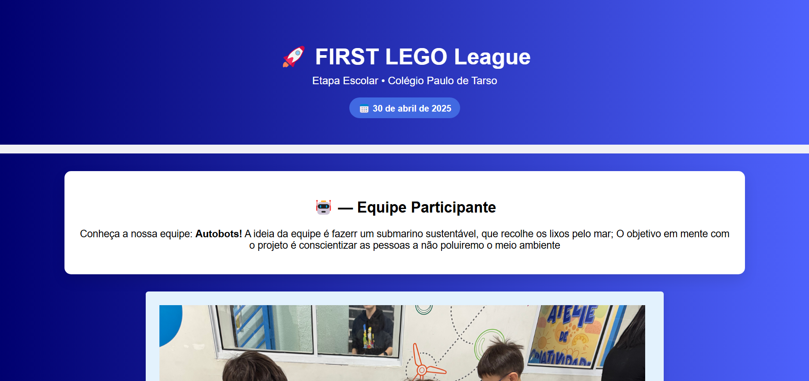
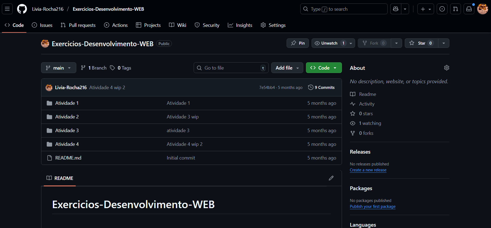

꒦꒷﹒Lívia Rocha
﹙Ícone por nobody.sk no Discord! Esse é um personagem meu,
então acho que conta como ícone.﹚
｡ﾟ･ Howdy!
⇢ Me chamo Lívia Antenucci Rocha, e no momento estou no primeiro ano do
Ensino médio Técnico de T.I., aprendendo majoritariamente linguagens de programação como
Python, HTML, CSS e JS.
Trago este portfólio mostrando algumas das minhas habilidades em desenvolvimento de códigos
e algums projetos que tenho feito até agora.
✧ 1. HTML ↴
𖥻﹕O uso para organizar os elementos de uma página em seus devidos lugares, conforme estilizados no CSS.
✧ 2. CSS ↴
𖥻﹕Provavelmente melhor parte da programação de um site pra mim, como uma artista digital. É ótimo poder escolher como são os elementos, cores e design.
✧ 3. JavaScript ↴
𖥻﹕Não tenho usado tanto até agora, mas é ótimo para criar formulários e interatividade na página, estou disposta a aprender mais sobre!
₊˚.☾ Projetos!
⇢ Estes são alguns projetos que eu tenho feito de Desenvolvimento WEB nesse ano
(a maioria não estão finalizados e eu mal tenho na verdade).
✧ 1. LEGO Site - Equipe Autobots ↴
𖥻﹕Este foi um projeto feio para divulgar os planos e integrantes de uma equipe da FLL (First LEGO League).
✧ 2. Projetos/Trabalhos Interminados ↴
𖥻﹕Esses são mais lições de casa passadas em relação à HTML porque honestamente eu não tenho mais o que mostrar :(
